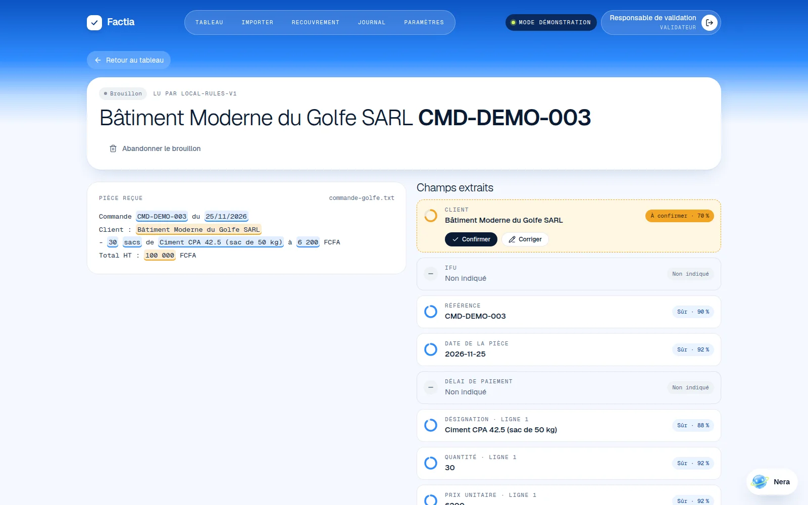
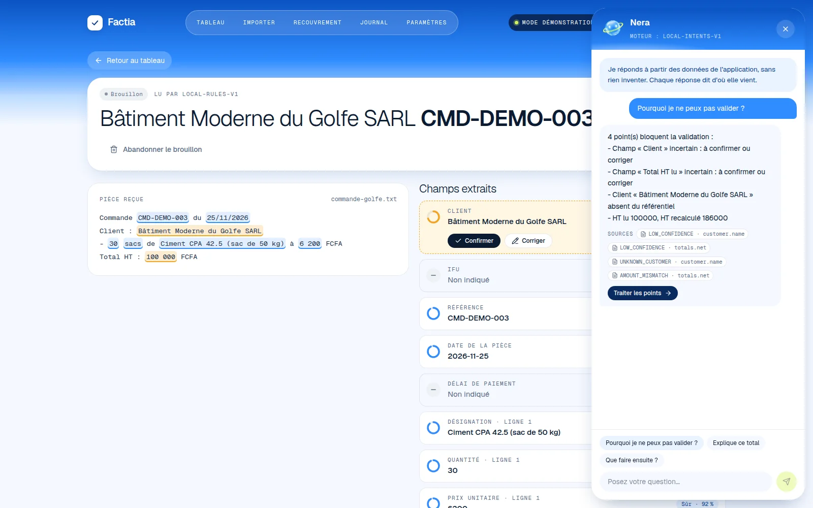
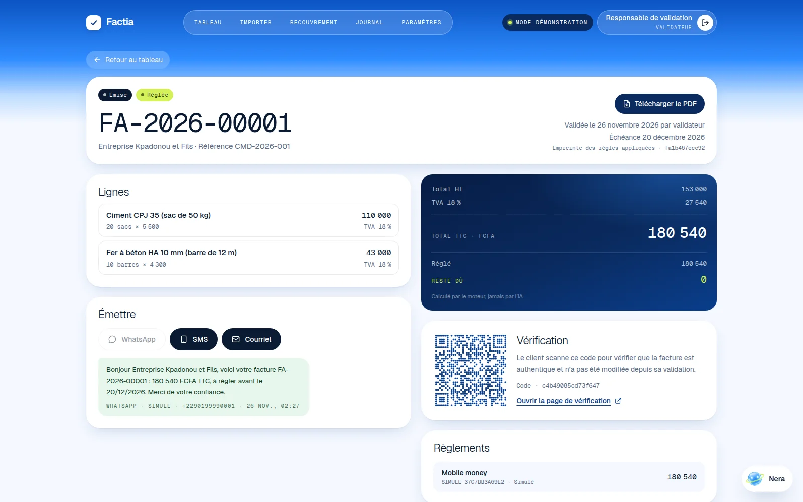
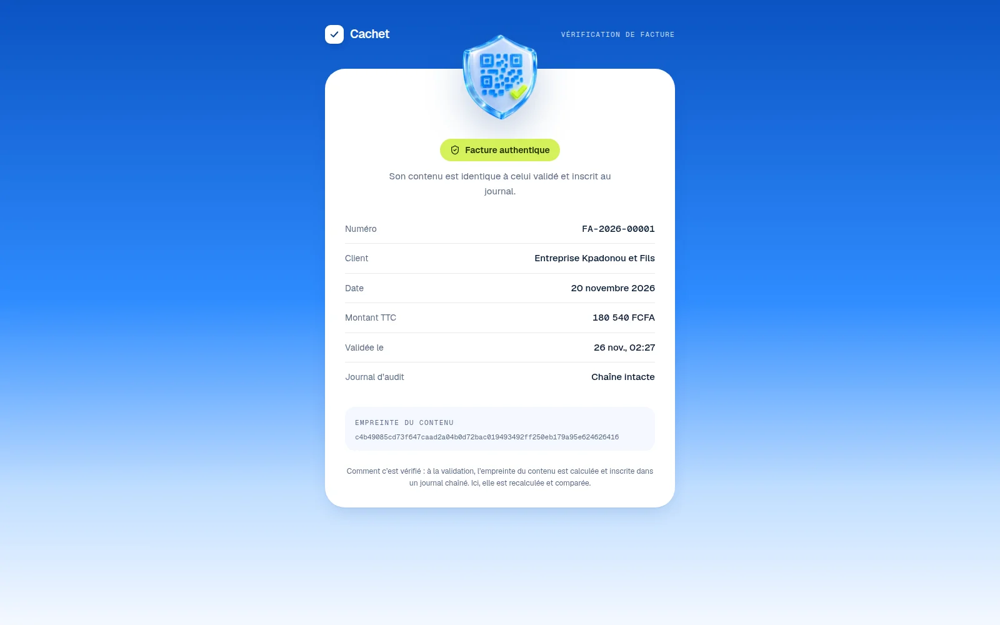
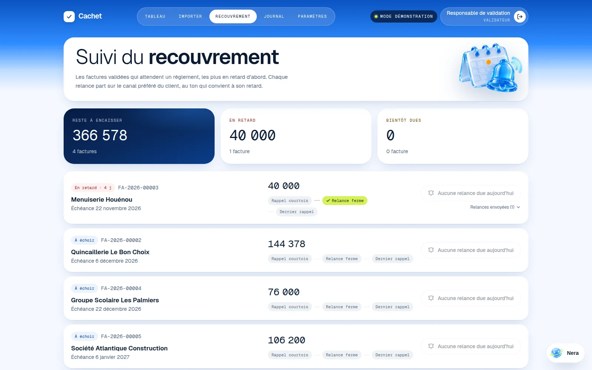

L'IA lit la pièce, l'humain confirme l'incertain, le moteur calcule chaque franc. Puis la facture est émise, vérifiable et relancée jusqu'au règlement.
Chaque devis, bon de commande ou message est recopié champ par champ, calcul compris.
Client mal identifié, quantité ou prix mal recopiés, total faux, facture envoyée deux fois.
Les échéances passent sans relance ; le client ne peut pas vérifier qu'une facture est authentique.
Extraction hors ligne : chaque champ garde sa position dans la pièce et sa confiance.
Seul l'incertain est soumis. Un champ absent reste absent : rien n'est inventé.
10 contrôles, validation par un autre utilisateur, numéro sans trou.
Émission, règlements, avoirs, relances et vérification par QR code.




Le QR code ouvre une page publique : l'empreinte du contenu est recalculée et comparée au journal chaîné.

Décimal exact, remises puis TVA par taux, arrondi lu dans la configuration.
Attribué dans la transaction de validation ; un abandon ne consomme rien.
Clé d'idempotence : double clic ou coupure, un seul effet.
Rôles séparés ; deux validations simultanées, une seule passe.
Une facture validée ne se modifie jamais.
Chaque action chaînée à la précédente par son empreinte.
Jeu de contrôle étanche : 6 pièces fictives jamais vues pendant le réglage, 70 champs, évaluées une seule fois. Seuil de revue humaine : 0,85.
des champs lus justes (66 / 70)
fausse certitude au-dessus du seuil
absences reconnues : rien d'inventé
des champs sans revue humaine
tests automatisés (180 backend, 12 interface)
du code backend couvert par les tests
compose up --build, puis localhost:8080
décisions d'architecture documentées (ADR)
Comptes : operateur, validateur, admin · mot de passe demo-<identifiant>
Installation : docker compose up --build, puis http://localhost:8080